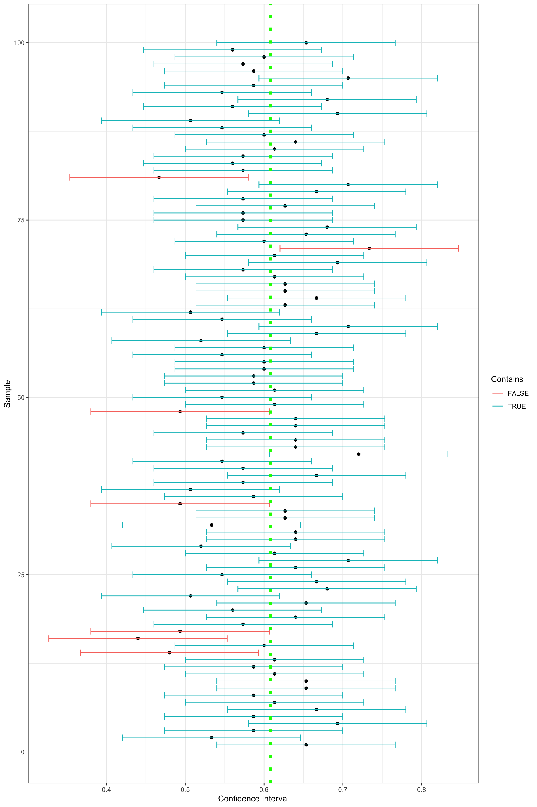
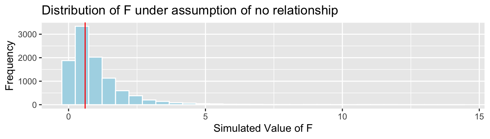
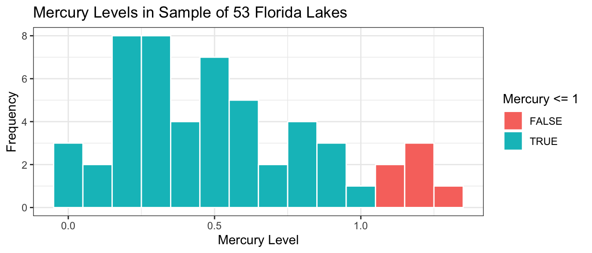
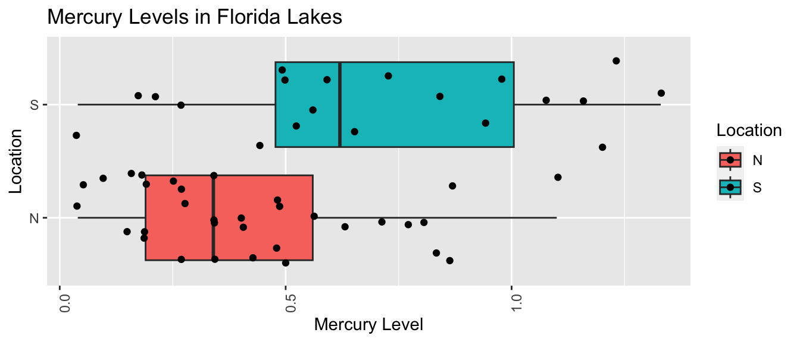

Chapter 3 Interval Estimation
Learning Outcomes:
- State null and alternative hypotheses associated with models involving categorical and quantitative explanatory variables.
- Explain how to use permutation tests for hypotheses involving means, medians, F-statistics, slopes, and other regression coefficients, as well as functions of these statistics.
- Interpret p-values in context.
- Explain the conclusions we should draw from from a hypothesis test, while accounting for other information available in a dataset.
- Explain how to simultaneously test for differences between multiple groups.
- Distinguish between statistical significance and practical importance.
3.1 Sampling Distributions
3.1.1 Sampling From a Population
In statistics, we often do not have the time, money, or means to collect data on all individuals or units on which we want to draw conclusions. Instead, we might collect data on only a subset of the individuals, and then make inferences about all individuals we are interested in, using the information we collected.
Vocabulary:
- A population is the entire set of individuals that we want to draw conclusions about.
- A sample is a subset of a population
- A parameter is a numerical quantity pertaining to an entire population
- A statistic is a numerical quantity calculated from a sample
We’ll work with a dataset containing information on all 20,591 flights from New York to Chicago in 2013. Our population of interest is all 20,591 flights.
In this situation, we have information on the entire population, but suppose temporarily that we didn’t. Instead, suppose we had only information on a random sample of 75 flights.
The parameter of interest is the proportion of on-time arrivals out of all flights in the population of 20,591. When the parameter is proportion, we’ll denote it with the letter \(p\).
We take a sample of 75 flights. The first 6 flights in the sample are shown below. The ontime variable tells whether or not the flight arrived on time.
set.seed(08082023)
S1 <- sample_n(Flights_NY_CHI, 75)
head(S1)## # A tibble: 6 × 9
## year month day carrier origin dest sched_dep_time arr_delay ontime
## <int> <int> <int> <chr> <chr> <chr> <int> <dbl> <chr>
## 1 2013 3 8 AA LGA ORD 1720 106 N
## 2 2013 12 15 AA JFK ORD 1715 -24 Y
## 3 2013 10 22 UA EWR ORD 1300 -12 Y
## 4 2013 8 26 UA EWR ORD 2110 15 N
## 5 2013 7 23 AA LGA ORD 1359 66 N
## 6 2013 5 13 UA EWR ORD 900 -21 YWe’ll calculate the number, and proportion of flights that arrived on time.
num_ontime <- sum(S1$ontime == "Y") # count number of on-time arrivalsNumber of on-time arrivals in the sample.
num_ontime## [1] 39Proportion of on-time arrivals in the sample.
p_hat <- num_ontime/75
p_hat## [1] 0.52In out sample 52 percent of flights arrived on-time. We’ll denote this quantity \(\hat{p}\), keeping with our convention of using the \(\hat{}\) symbol to represent a quantity that is calculated from data (like the predictions and estimates we saw in the previous chapter). The sample statistic \(\hat{p}\) is an estimate of the population proportion \(p\).
Of course, this was just one sample of 75 flights. We should not expect the proportion of on-time flights in our sample (\(\hat{p}\)) to exactly match the proportion of on-time flights in the entire population (\(p\)). Nevertheless we can use the sample to estimate the proportion of all flights in the population that arrive on time. Perhaps, we could say that we would expect between 42 and 62 percent of all 2013 flights from New York to arrive on time. Or, perhaps we could be more precise and estimate that the percentage of on-time flights to be between 47 and 57. We’ll need to figure out how precise we can make our range, while still being confident that it does, in fact, contain the true population parameter.
To summarize:
- The population is all 20,591 flights from New York to Chicago in 2013.
- The sample is the flights that we randomly selected.
- The parameter \(p\) is the proportion of on-time arrivals among all 2013 flights from New York to Chicago, which we do not know (though in this particular example, we could find it, since we have data on all flights in the population.)
- The sample statistic is the proportion of flights in our sample that arrived on time, which we know to be \(\hat{p}\) = 0.52.
Now, let’s take a different sample of 75 flights and see how the proportion of on-time arrivals compares.
S2 <- sample_n(Flights_NY_CHI, 75)
num_ontime2 <- sum(S2$ontime == "Y") # count number of on-time arrivals
p_hat2 <- num_ontime2/75
p_hat2## [1] 0.5066667By studying the behavior of the proportion of on-time arrivals in different samples we can gauge how close the proportion in a given sample is likely be to the unknown population parameter. If all of our samples produce very similar estimates, then it is likely that the population parameter is close to these estimates. If the sample proportion varies considerably from sample to sample, then it is possible that the proportion in any given sample might be very different than the population parameter.
Let’s take 10,000 more random samples of 75 flights and record the proportion of on-time arrivals in each sample.
nreps <- 10000 # number of repetitions
p_hat_val <- rep(NA, nreps) # create vector to hold proportion of on-time arrivals
Sample <- 1:nreps
for(i in 1:nreps){
S <- sample_n(Flights_NY_CHI, 75) # take sample of 75
N_ontime <- sum(S$ontime == "Y") # count number of on-time arrivals
p_hat_val[i] <- N_ontime/75 # record proportion on-time
}
Samples_df <- data.frame(Sample, p_hat_val) # store results in a data frameThe table shows the proportion of on-time arrivals in the first 20 samples of 75 flights.
kable(head(Samples_df, 20))| Sample | p_hat_val |
|---|---|
| 1 | 0.6533333 |
| 2 | 0.5333333 |
| 3 | 0.5866667 |
| 4 | 0.6933333 |
| 5 | 0.5866667 |
| 6 | 0.6666667 |
| 7 | 0.6133333 |
| 8 | 0.5866667 |
| 9 | 0.6533333 |
| 10 | 0.6533333 |
| 11 | 0.6133333 |
| 12 | 0.5866667 |
| 13 | 0.6133333 |
| 14 | 0.4800000 |
| 15 | 0.6000000 |
| 16 | 0.4400000 |
| 17 | 0.4933333 |
| 18 | 0.5733333 |
| 19 | 0.6400000 |
| 20 | 0.5600000 |
The histogram below shows the distribution of the proportion of on-time arrivals in the 10,000 different samples.
Prop_Samp_Dist<- ggplot(data=Samples_df, aes(x=p_hat_val)) +
geom_histogram(color="white", fill="blue") +
ggtitle("Sampling Distribution for Proportion On Time") +
xlab("Prop. on time in sample")
Prop_Samp_Dist
We notice that most of our 10,000 samples yielded proportions of on-time arrivals between 0.5 and 0.7, The distribution of proportion of on-time arrivals is roughly symmetric and bell-shaped.
The distribution shown in this histogram is called the sampling distribution for $. We can gauge how much the proportion of on-time arrivals varies between samples by calculating the standard deviation of this sampling distribution. The standard deviation of a sampling distribution for a statistic is also called the standard error of the statistic. In this case it represents the standard error \(\hat{p}\) (the proportion of on-time arrivals), and is denoted \(\text{SE}(\hat{p})\). This standard error is shown below.
SE_p_hat <- sd(Samples_df$p_hat_val)
SE_p_hat## [1] 0.05659102**Vocabulary:
- The sampling distribution of a statistic is the distribution of values the statistic takes on across many different samples of a given size.
- The standard error of a statistic is the standard deviation of that statistic’s sampling distribution. It measures how much the statistic varies between different samples of a given size.
In this rare situation, we actually have data on all 20,591 flights from New York to Chicago in 2013 (our entire population), Let’s calculate the true value of the population parameter \(p\), the proportion of flights that arrived on-time in our actual population.
p <- sum(Flights_NY_CHI$ontime == "Y")/20591
p## [1] 0.6079841In fact, just over 60% of all flights in the population arrived on time.
The sampling distribution for the proportion of on-time flights is shown again below. The true proportion of on-time flights is marked by the green dotted line. The gold bar at the bottom of the histogram represents the range of sample proportions that lie within \(\pm 2\) standard errors of the true population proportion of flights that arrived on time.
0.6079841 - 2(0.056591) to 0.6079841 + 2(0.056591)
Prop_Samp_Dist+ geom_vline(xintercept=p, color="green", linetype="dotted", linewidth=2) + geom_segment(aes(x=p - 2*SE_p_hat,xend=p + 2*SE_p_hat, y=50, yend=50), color="gold", size=10, alpha=0.01) 
We calculate the proportion of samples whose proportion of on-time arrivals lies within \(\pm 2\) standard errors of the true proportion.
Lower <- p - 2*SE_p_hat
Upper <- p + 2*SE_p_hat
sum((Samples_df$p_hat_val >=Lower) & (Samples_df$p_hat_val <= Upper))## [1] 9539r sum((Samples_df$p_hat >=Lower) & (Samples_df$p_hat <= Upper)) out of the 10,000 simulations (approximately 95%) of the samples produced proportions within \(\pm 2\) standard errors of the true population proportion of on-time flights.
3.1.2 Confidence Intervals
In a real situation, we won’t have access to the entire population of flights, only the flights in a single sample. For example, recall our original sample of 75 flights, in which we observed a proportion of on-time arrivals of \(\hat{p}=\) 0.52.
Since we now know that 95% of all samples produce proportions that lie within two standard errors of the population proportion, we can obtain an estimate of the population proportion \(p\) by adding and subtracting \(2\times \text{SE}(\hat{p})\) from our observed sample proportion \(\hat{p}\). Such an interval is called an approximate 95% confidence interval for the true population proportion \(p\).
Approximate 95% Confidence Interval for \(\hat{p}\)
\[ \hat{p} \pm 2\times \text{SE}(\hat{p}) \]
The confidence interval, based on our original sample, is calculated below.
c(p_hat - 2*SE_p_hat, p_hat + 2*SE_p_hat) ## [1] 0.406818 0.633182Based on our sample of 75 flights, we can be 95% confident that the true proportion of on-time arrivals among all 2013 flights from New York to Chicago is between 0.406818 and p_hat + 2*SE_p_hat.
In fact, knowing what we do about the true value of the population parameter \(p\), we can see that our confidence interval does indeed contain this value. Of course, in a real situaiton, we won’t know the true value of the population parameter, so we won’t know for sure whether or not our confidence interval contains this true parameter value.
A pertinent question at this stage would be ``What does 95% confidence mean?“. To answer that, let’s explore what happens when we calculate confidence intervals based on estimates many different samples. For each of our 10,000 different samples taken from our population, we’ll add and subtract two standard errors from the sample proportion \(\hat{p}\) corresponding to that sample.
The table below displays the value of \(\hat{p}\), for the first 20 samples we took, along with the lower and upper bounds of the confidence interval, and whether or not the confidence interval contains the true parameter value \(p\) (either TRUE or FALSE).
Samples_df <- Samples_df %>% mutate( Lower = p_hat_val - 2*SE_p_hat,
Upper = p_hat_val + 2*SE_p_hat,
Contains = p >= Lower & p <= Upper)
kable(head(Samples_df, 20))| Sample | p_hat_val | Lower | Upper | Contains |
|---|---|---|---|---|
| 1 | 0.6533333 | 0.5401513 | 0.7665154 | TRUE |
| 2 | 0.5333333 | 0.4201513 | 0.6465154 | TRUE |
| 3 | 0.5866667 | 0.4734846 | 0.6998487 | TRUE |
| 4 | 0.6933333 | 0.5801513 | 0.8065154 | TRUE |
| 5 | 0.5866667 | 0.4734846 | 0.6998487 | TRUE |
| 6 | 0.6666667 | 0.5534846 | 0.7798487 | TRUE |
| 7 | 0.6133333 | 0.5001513 | 0.7265154 | TRUE |
| 8 | 0.5866667 | 0.4734846 | 0.6998487 | TRUE |
| 9 | 0.6533333 | 0.5401513 | 0.7665154 | TRUE |
| 10 | 0.6533333 | 0.5401513 | 0.7665154 | TRUE |
| 11 | 0.6133333 | 0.5001513 | 0.7265154 | TRUE |
| 12 | 0.5866667 | 0.4734846 | 0.6998487 | TRUE |
| 13 | 0.6133333 | 0.5001513 | 0.7265154 | TRUE |
| 14 | 0.4800000 | 0.3668180 | 0.5931820 | FALSE |
| 15 | 0.6000000 | 0.4868180 | 0.7131820 | TRUE |
| 16 | 0.4400000 | 0.3268180 | 0.5531820 | FALSE |
| 17 | 0.4933333 | 0.3801513 | 0.6065154 | FALSE |
| 18 | 0.5733333 | 0.4601513 | 0.6865154 | TRUE |
| 19 | 0.6400000 | 0.5268180 | 0.7531820 | TRUE |
| 20 | 0.5600000 | 0.4468180 | 0.6731820 | TRUE |
The graphic below visualizes the confidence intervals produced using the estimates from the first 100 samples. The green dotted line indicates the true value of \(p\). The black dots indicate the value of \(\hat{p}\) for each sample. Intervals that do in fact contain the true value of \(p\) are shown in blue, and intervals that do not contain the true value of \(p\) are shown in green.
ggplot(data=Samples_df[1:100,], aes(y=Sample, x=p_hat_val)) +
geom_point() +
geom_errorbar(aes(xmin = Lower, xmax = Upper, color=Contains)) +
xlab("Confidence Interval") +
ylab("Sample") +
geom_vline(xintercept = p, color="green", linetype="dotted", size=2) + theme_bw()
Out of these 100 samples, 0 contain the true value of the population parameter \(p\). This is close to the 95% confidence level.
The picture shows confidence intervals produced by the first 100 samples, but we actually took 10,000 different samples of 75 flights. Let’s calculate how many of these samples produced confidence intervals that contain the true value of \(p\).
sum(Samples_df$Contains == TRUE)## [1] 9539Again, notice that close to 95% of the samples produced confidence intervals contain the true population parameter \(p\). Note that for the red intervals that do not contain \(p\) nothing was done incorrectly. The sample was taken at random, and the confidence interval was calculated using the correct formula. It just happened that by chance, we obtained a sample proportion \(\hat{p}\) that was unusually high or low, leading to an interval that did not capture the true population parameter. This, of course, happens rarely, and approximately 95% of the samples do, in fact, result in intervals that contain the true value of \(p\).
This brings us back to the question “what does 95% confidence mean?”. An approximate 95% confidence interval means that if we take a large number of samples and calculate confidence intervals from each of them, then approximately 95% of the samples will produce intervals containing the true population parameter. In reality, we’ll only have on sample, and won’t know whether or not our interval contains the true parameter value. Assuming we have taken the sample and calculated the interval correctly, we can rest assured in the knowledge that that 95% of all intervals taken would contain the true parameter value, and hope that ours is among that 95%.
We calculated the confidence interval by taking our sample statistic \(\hat{p}\) plus/minus two standard errors. Confidence intervals that are calculated by adding and subtracting a certain number of standard errors from the sample statistic are called standard error confidence intervals. This approach will work as long as the sampling distribution is symmetric and bell-shaped. Probability theory tells us that in a symmetric and bell-shaped distribution, approximately 95% of the area lies within two standard errors of the center of the distribution, given by the true parameter value. We will, however, see that this approach will not work in all cases. Not all statistics produce sampling distributions that are symmetric and bell-shaped, and we will need an alternative way to calculate confidence intervals in these situations.
knitr::include_graphics("Emp_Rule.png")
Figure 3.1: Image from https://openintro-ims.netlify.app/foundations-mathematical
If we want to use a level of confidence that is different than 95%, we can adjust the value we multiply the standard error by. In general, a standard error confidence interval has the form
\[ \text{Statistic } \pm m\times \text{Standard Error}, \]
where the value of \(m\) depends on the desired level of confidence.
Of course, you might ask why we needed to calculate a confidence interval for the proportion of on-time flights in the first place, since we actually have data on all 20,591 flights in the population and already know the true proportion of on-time arrivals to be 0.608. The answer is that we don’t. But, in most real situations, we will only have data from a single sample, not the entire population, and we won’t know the true population parameter. We’ll be able to build on the ideas of sampling distributions and standard error that we learned about in this section to calculate confidence intervals in those scenarios.
3.2 Bootstrapping
3.2.1 Mercury Levels in Florida Lakes
A 2004 study by Lange, T., Royals, H. and Connor, L. examined Mercury accumulation in large-mouth bass, taken from a sample of 53 Florida Lakes. If Mercury accumulation exceeds 0.5 ppm, then there are environmental concerns. In fact, the legal safety limit in Canada is 0.5 ppm, although it is 1 ppm in the United States.

Figure 3.2: https://www.maine.gov/ifw/fish-wildlife/fisheries/species-information/largemouth-bass.html
In our sample, we have data on 53 lakes, out of more than 30,000 lakes in the the state of Florida. We’ll attempt to draw conclusions about the entire population, consisting of all lakes in Florida, using data from our sample of 53. It is not clear how the lakes in this sample of 53 were selected, or how representative they are of all lakes in the state of Florida. Let’s assume for our purposes that the lakes in the sample can be reasonably thought of as being representative of all lakes in Florida.
The mercury levels of the first 10 lakes in the sample are shown in the table below.
data("FloridaLakes")
FloridaLakes <- FloridaLakes %>% rename(Mercury = AvgMercury)kable(head(FloridaLakes %>% select(ID, Lake, Mercury), 10))| ID | Lake | Mercury |
|---|---|---|
| 1 | Alligator | 1.23 |
| 2 | Annie | 1.33 |
| 3 | Apopka | 0.04 |
| 4 | Blue Cypress | 0.44 |
| 5 | Brick | 1.20 |
| 6 | Bryant | 0.27 |
| 7 | Cherry | 0.48 |
| 8 | Crescent | 0.19 |
| 9 | Deer Point | 0.83 |
| 10 | Dias | 0.81 |
The histogram shows the distribution of mercury levels in the 53 lakes in the sample. Lakes exceeding the US standard of 1 ppm are shown in red.
Lakes_Hist <- ggplot(data=FloridaLakes, aes(x=Mercury)) +
geom_histogram(aes(fill=Mercury<=1), color="white", binwidth = 0.1) +
ggtitle("Mercury Levels in Sample of 53 Florida Lakes") +
xlab("Mercury Level") + ylab("Frequency") + theme_bw()
Lakes_Hist
The proportion of lakes with mercury levels exceeding 1 ppm is calculated below.
p_hat <- sum(FloridaLakes$Mercury > 1)/53
p_hat## [1] 0.1132075We see that in our sample of 53 lakes, approximately 11% have mercury levels exceeding the US standard of 1 ppm. Suppose we want to estimate the proportion of all Florida Lakes whose mercury level exceeds this standard. As we saw in the previous section, we would not expect the population proportion to exactly match the sample, due to random variability between samples. We can use the sample proportion as an estimate (\(\hat{p} = 0.1132\)), and construct a confidence interval for the unknown population proportion \(p\).
In order to construct the confidence interval, we need to know how much the sample proportion of lakes exceeding 1 ppm \(\hat{p}\) could vary between different samples of size 53. That is, we need to know the standard error of \(\hat{p}\). In the previous section, we calculated the standard error by taking 10,000 different samples of the same size as ours from the population, calculating the proportion for each sample, and then calculating the standard deviation of the proportions obtained from these 10,000 different samples. This procedure will not work here, however, because unlike the previous example where we really did have data on the entire population of all flights from New York to Chicago, we do not have data on all 30,000+ lakes in Florida. We cannot take a lot of different samples of size 53 from the population of all lakes, and thus, cannot obtain the sampling distribution for the the proportion of lakes exceeding 1 ppm, or estimate the standard error of \(\hat{p}\).
3.2.2 Bootstrap Sampling
All we have is a single sample of 53 lakes. We need to figure out how much the proportion of lakes with mercury levels exceeding 1 ppm would vary between different samples of size 53, using only the information contained in our one sample.
To do this, we’ll implement a popular simulation-based strategy, known as bootstrapping.
Let’s assume our sample is representative of all Florida lakes. Then, we’ll duplicate the sample many times to create a large set that will look like the population of all Florida Lakes. We can then draw samples of 53 from that large population, and record the mean mercury level for each sample of 53.
An illustration of the bootstrapping procedure is shown below, using a sample of 12 colored dots, instead of the 53 lakes.

In fact, duplicating the sample many times and selecting new samples of size \(n\) has the same effect as drawing samples of size \(n\) from the original sample, by putting the item drawn back in each time, a procedure called sampling with replacement. Thus, we can skip the step of copying/pasting the sample many times, and instead draw our samples with replacement.
This means that in each new sample, some lakes will be drawn multiple times and others not at all. It also ensures that each sample is different, allowing us to estimate variability in the sample mean between the different samples of size 53.
An illustration of the concept of bootstrapping, using sampling with replacement is shown below.

The variability in sample means in our newly drawn samples is used to approximate the variability in proportion \(\hat{p}\) that would occur between different samples of 53 lakes, drawn from the population of all Florida Lakes.
The point of bootstrapping is to observe how much a statistic (in this case the proportion of lakes with Mercury levels exceeding 1 ppm) varies between bootstrap samples. This can act as an estimate of how much that statistic would vary between different samples of size \(n\), drawn from the population.
The steps of bootstrap sampling can be summarized in the following algorithm.
Bootstrap Algorithm
For an original sample of size \(n\):
Take a sample size \(n\) by randomly sampling from the original, with replacement. Thus, some observations will show up multiple times, and others not at all. This sample is called a bootstrap sample.
Calculate the statistic of interest in the bootstrap sample (in this case \(\hat{p}\), the proportion of lakes whose mercury levels exceed 1 ppm).
Repeat steps 1 and 2 many (say 10,000) times, keeping track of the statistic of interest that is calculated in each bootstrap sample.
Look at the distribution of the statistic across bootstrap samples. The variability in this bootstrap distribution can be used to approximate the variability in the sampling distribution for the statistic of interest.
3.2.3 Bootstrap Samples of Lakes
The sample_n() function samples the specified number rows from a data frame, with or without replacement.
The lakes in the first sample are shown below. Notice that some lakes occur multiple times, and others not at all.
Bootstrap Sample 1
BootstrapSample1 <- sample_n(FloridaLakes, 53, replace=TRUE) %>% arrange(Lake)
BootstrapSample1 %>% select(ID, Lake, Mercury)## # A tibble: 53 × 3
## ID Lake Mercury
## <int> <chr> <dbl>
## 1 2 Annie 1.33
## 2 3 Apopka 0.04
## 3 4 Blue Cypress 0.44
## 4 6 Bryant 0.27
## 5 9 Deer Point 0.83
## 6 9 Deer Point 0.83
## 7 10 Dias 0.81
## 8 11 Dorr 0.71
## 9 12 Down 0.5
## 10 12 Down 0.5
## # ℹ 43 more rowsWe calculate the proportion of lakes with mercury levels exceeding 1 ppm in this bootstrap sample. Note that if a lake shows up more than once in the bootstrap sample, then it is counted however many times it shows up.
sum(BootstrapSample1$Mercury > 1) / 53## [1] 0.0754717*Bootstrap Sample #2
We take a second bootstrap sample. Notice that the lakes chosen and omitted differ from the first sample.
BootstrapSample2 <- sample_n(FloridaLakes, 53, replace=TRUE) %>% arrange(Lake)
BootstrapSample2 %>% select(ID, Lake, Mercury)## # A tibble: 53 × 3
## ID Lake Mercury
## <int> <chr> <dbl>
## 1 1 Alligator 1.23
## 2 3 Apopka 0.04
## 3 4 Blue Cypress 0.44
## 4 4 Blue Cypress 0.44
## 5 5 Brick 1.2
## 6 7 Cherry 0.48
## 7 8 Crescent 0.19
## 8 8 Crescent 0.19
## 9 8 Crescent 0.19
## 10 8 Crescent 0.19
## # ℹ 43 more rowsProportion exceeding 1 ppm:
sum(BootstrapSample2$Mercury > 1) / 53## [1] 0.0754717Bootstrap Sample #3
We’ll take one more bootstrap sample and calculate the proportion of lakes with mercury levels exceeding 1 ppm.
BootstrapSample3 <- sample_n(FloridaLakes, 53, replace=TRUE) %>% arrange(Lake)
BootstrapSample3 %>% select(ID, Lake, Mercury)## # A tibble: 53 × 3
## ID Lake Mercury
## <int> <chr> <dbl>
## 1 5 Brick 1.2
## 2 5 Brick 1.2
## 3 6 Bryant 0.27
## 4 6 Bryant 0.27
## 5 7 Cherry 0.48
## 6 8 Crescent 0.19
## 7 8 Crescent 0.19
## 8 9 Deer Point 0.83
## 9 9 Deer Point 0.83
## 10 10 Dias 0.81
## # ℹ 43 more rowsProportion exceeding 1 ppm:
sum(BootstrapSample3$Mercury > 1) / 53## [1] 0.07547173.2.4 Bootstrap Distribution
Now that we have seen how bootstrap sampling works, we’ll take a large number (10,000) different bootstrap samples and examine how the proportion of lakes with mercury levels exceeding 1 ppm varies between samples.
We’ll use a for-loop to take many different bootstrap samples and record the observed proportion in a vector called p_hat_b
p_hat <- sum(FloridaLakes$Mercury > 1)/53 #calculate sample statistic
Bootstrap_prop <- rep(NA, 10000) #setup vector to hold bootstrap statistics
for (i in 1:10000){
BootstrapSample <- sample_n(FloridaLakes, 53, replace=TRUE) #take bootstrap sample
Bootstrap_prop[i] <- sum(BootstrapSample$Mercury > 1)/53 # calc. prop exceeding 1
}
Lakes_Bootstrap_Prop <- data.frame(Bootstrap_prop) #store values in a dataframeThe distribution of proportions observed in the 10,000 different bootstrap samples is shown below. This distribution is called the bootstrap distribution.
Lakes_Bootstrap_Prop_plot <- ggplot(data=Lakes_Bootstrap_Prop, aes(x=Bootstrap_prop)) +
geom_histogram(color="white", fill="lightblue") +
xlab("Prop > 1 in Bootstrap Sample ") + ylab("Frequency") +
ggtitle("Bootstrap Distribution for Prop. of Lakes Exeeding 1 ppm Hg") +
theme(legend.position = "none")
Lakes_Bootstrap_Prop_plot3.2.5 Bootstrap SE Confidence Interval
We calculate the standard deviation of this bootstrap distribution, which is an estimate of the standard error of \(\hat{p}\).
SE_p_hat <- sd(Lakes_Bootstrap_Prop$Bootstrap_prop)Since the bootstrap distribution is roughly symmetric and bell-shaped, we can calculate a 95% confidence interval for the proportion of all Florida lakes with mercury levels exceeding 1 ppm, using bootstrap standard error confidence interval method
\[ \hat{p} \pm 2\times\text{SE}(\hat{p}) \]
c(p_hat - 2*SE_p_hat, p_hat + 2*SE_p_hat)## [1] 0.02655044 0.19986466We are 95% confident that the proportion of all Florida lakes with mercury levels exceeding 1 ppm is between 0.0265504 and 0.1998647.
The gold bar at the bottom of the bootstrap distribution represents this 95% confidence interval.
Lakes_Bootstrap_Prop_plot +
geom_segment(aes(x=p_hat - 2*SE_p_hat,xend=p_hat + 2*SE_p_hat, y=50, yend=50),
color="gold", size=10, alpha=0.01) 3.2.6 Bootstrap Distribution vs Sampling Distribution
We stated that the standard error of the bootstrap distribution is meant to give us and estimate of the standard error of the statistic of interest (\(\hat{p}\) in this case). We do note, however, that the bootstrap distribution is not the same as the sampling distribution for a statistic illustrated in the previous section. The sampling distribution shows the distribution of values the statistic would take on accross many different samples drawn from the population. As such, it will be centered at the true population parameter (\(p\) in this case). The bootstrap distribution, on the other hand, shows us the distribution of values the statistic takes on across different bootstrap samples drawn from the original sample, using replacement. Since it comes entirely from the original sample, rather than the population, it will be centered at the sample statistic ( in this case \(\hat{p}\)), rather than the unknown \(p\). Nevertheless, the amount of variability in a statistic, calculated between different bootstrap samples, is often a reasonable approximation of the amount of variability we would observe in that statistic if we could take many samples of the same size from the entire population.
3.3 Bootstrap Confidence Interval Example
3.3.1 Bootstrapping Other Statistics
We’ve seen how to use bootstrapping to calculate confidence intervals for an unknown population parameter \(p\), using an estimate \(\hat{p}\), calculated from a sample of size \(n\). This procedure can be applied to calculate confidence intervals for a wide range of population parameters, using statistics calculated from a sample.
For example, we could calculate confidence intervals any of the following parameters, using the corresponding sample statistic.
| Context | Parameter | Statistic |
|---|---|---|
| Proportion | \(p\) | \(\hat{p}\) |
| Mean | \(\mu\) | \(\bar{x}\) |
| Standard Deviation | \(\sigma\) | \(s\) |
| Median | no comon abbreviations | |
| Difference in Means | \(\mu_2-\mu_1\) | \(\bar{x}_2 - \bar{x}_1\) |
| Regression Coefficient | \(\beta_j\) | \(b_j\) |
| Estimated Regression Response | \(\beta_0 + \beta_1x_{i1} + \ldots + \beta_px_{ip}\) | \(b_0 + b_1x_{i1} + \ldots + b_px_{ip}\) |
We follow the same algorithm as we did when working with a proportion, and simply calculate whatever statistic we are interested in step 2, in place of \(\hat{p}\), as we did previously.
The bootstrap algorithm is given again, below.
Bootstrap Algorithm
For an original sample of size \(n\):
Take a sample of size \(n\) by randomly sampling from the original sample with replacement. (Thus some observations will show up multiple times and others not at all.)
Calculate the statistic of interest in the bootstrap sample.
Repeat steps 1 and 2 many (say 10,000) times, keeping track of the statistic of interest that is calculated in each bootstrap sample.
Look at the distribution of the statistic across bootstrap samples. The variability in this bootstrap distribution can be used to approximate the variability in the sampling distribution for the statistic of interest.
We’ll now go through examples, calculating bootstrap confidence intervals for each of the parameters listed above.
3.3.2 CI for Mean
The histogram shows the distribution of mercury levels of the 53 lakes in our sample. The mean and standard deviation in mercury levels for these 53 lakes is shown.
Lakes_Hist <- ggplot(data=FloridaLakes, aes(x=Mercury)) +
geom_histogram(color="white", fill="lightblue", binwidth = 0.2) +
ggtitle("Mercury Levels in Sample of Florida Lakes") +
xlab("Mercury Level") + ylab("Frequency")
Lakes_Hist
We’ll calculate the mean and median mercury level for the 53 lakes in the sample.
Lakes_Stats <- FloridaLakes %>% summarize(MeanHg = mean(Mercury),
StDevHG = sd(Mercury),
N=n())
kable(Lakes_Stats)| MeanHg | StDevHG | N |
|---|---|---|
| 0.5271698 | 0.3410356 | 53 |
We want to calculate a 95% confidence interval for the mean mercury level among all Florida lakes. We’ll use bootstrapping again, this time using the sample mean, rather than the proportion exceeding 1 ppm, as our statistic of interest.
Bootstrap Steps
Take a sample of 53 lakes by randomly sampling from the original sample of 53 lakes, with replacement.
Calculate the mean mercury level in the bootstrap sample.
Repeat steps 1 and 2 many (say 10,000) times, keeping track of the mean mercury level in each bootstrap sample.
Look at the distribution of the mean across bootstrap samples. The variability in this bootstrap distribution can be used to approximate the variability in the sampling distribution for the mean mercury level.
We’ll illustrate the procedure on 3 bootstrap samples.
Bootstrap Sample 1
BootstrapSample1 <- sample_n(FloridaLakes, 53, replace=TRUE) %>% arrange(Lake)
BootstrapSample1 %>% select(ID, Lake, Mercury)## # A tibble: 53 × 3
## ID Lake Mercury
## <int> <chr> <dbl>
## 1 2 Annie 1.33
## 2 2 Annie 1.33
## 3 3 Apopka 0.04
## 4 4 Blue Cypress 0.44
## 5 5 Brick 1.2
## 6 12 Down 0.5
## 7 14 East Tohopekaliga 1.16
## 8 13 Eaton 0.49
## 9 16 George 0.15
## 10 16 George 0.15
## # ℹ 43 more rowsWe calculate the mean mercury level among the lakes in the bootstrap sample.
mean(BootstrapSample1$Mercury)## [1] 0.5292453Bootstrap Sample #2
BootstrapSample2 <- sample_n(FloridaLakes, 53, replace=TRUE) %>% arrange(Lake)
BootstrapSample2 %>% select(ID, Lake, Mercury)## # A tibble: 53 × 3
## ID Lake Mercury
## <int> <chr> <dbl>
## 1 1 Alligator 1.23
## 2 1 Alligator 1.23
## 3 1 Alligator 1.23
## 4 2 Annie 1.33
## 5 3 Apopka 0.04
## 6 3 Apopka 0.04
## 7 3 Apopka 0.04
## 8 9 Deer Point 0.83
## 9 12 Down 0.5
## 10 12 Down 0.5
## # ℹ 43 more rowsMean Mercury Level:
mean(BootstrapSample2$Mercury)## [1] 0.4777358Bootstrap Sample #3
BootstrapSample3 <- sample_n(FloridaLakes, 53, replace=TRUE) %>% arrange(Lake)
BootstrapSample3 %>% select(ID, Lake, Mercury)## # A tibble: 53 × 3
## ID Lake Mercury
## <int> <chr> <dbl>
## 1 1 Alligator 1.23
## 2 3 Apopka 0.04
## 3 6 Bryant 0.27
## 4 7 Cherry 0.48
## 5 8 Crescent 0.19
## 6 10 Dias 0.81
## 7 10 Dias 0.81
## 8 11 Dorr 0.71
## 9 12 Down 0.5
## 10 12 Down 0.5
## # ℹ 43 more rowsMean Mercury Level:
mean(BootstrapSample3$Mercury)## [1] 0.4860377Now, we’ll take 10,000 bootstrap samples, and record the mean mercury concentration in each sample.
mean <- mean(FloridaLakes$Mercury) #calculate sample statistic
Bootstrap_Mean <- rep(NA, 10000) # setup vector to hold bootstrap statistics
for (i in 1:10000){
BootstrapSample <- sample_n(FloridaLakes, 53, replace=TRUE) # take bootstrap sample
Bootstrap_Mean[i] <- mean(BootstrapSample$Mercury) # calculate mean in bootstrap sample
}
Lakes_Bootstrap_Results_Mean <- data.frame(Bootstrap_Mean) #store results in data frameThe bootstrap distribution for the mean mercury level is shown below, along with its standard error.
Lakes_Bootstrap_Mean_Plot <- ggplot(data=Lakes_Bootstrap_Results_Mean,
aes(x=Bootstrap_Mean)) +
geom_histogram(color="white", fill="lightblue") +
xlab("Mean Mercury in Bootstrap Sample ") + ylab("Frequency") +
ggtitle("Bootstrap Distribution for Sample Mean in Florida Lakes") +
theme(legend.position = "none")
Lakes_Bootstrap_Mean_Plot 
We’ll calculate the standard error of the mean. This is a measure of how much the mean varies between samples.
SE_mean <- sd(Lakes_Bootstrap_Results_Mean$Bootstrap_Mean)
SE_mean## [1] 0.045862Notice that the standard error of the mean is much less than the sample standard deviation of 0.527.
Interpretations of sample standard deviation and standard error of the mean
- The sample standard deviation measures the amount of variability in mercury levels between the 53 individual lakes in our sample.
- The standard error of the mean measures the amount of variability in sample mean mercury levels between different samples of size 53.
There is more variability between mercury levels in individual lakes than there is between average mercury levels in different samples of size 53.
Since the bootstrap distribution is roughly symmetric and bell-shaped, we can use the bootstrap standard error method to calculate an approximate 95% confidence interval for the mean mercury level among all Florida lakes.
\[ \text{Statistic} \pm 2\times\text{Standard Error} \]
In this case, the statistic of interest is the sample mean \(\bar{x}=0.527\). The confidence interval is
\[ \begin{aligned} & \bar{x} \pm 2\times\text{SE}(\bar{x}) \\ & = 0.527 \pm 2\times{0.458} \end{aligned} \]
95% Confidence Interval:
c(mean - 2*SE_mean, mean + 2*SE_mean) ## [1] 0.4354458 0.6188938The 95% confidence interval is shown by the gold bar on the graph of the bootstrap distribution below.
Lakes_Bootstrap_Mean_Plot +
geom_segment(aes(x=mean - 2*SE_mean,xend=mean + 2*SE_mean, y=50, yend=50),
color="gold", size=10, alpha=0.01) 
We are 95% confident that the average mercury level among all Florida lakes is between 0.4354458 and 0.6188938 parts per million.
3.3.3 CI for Standard Deviation
Now, we’ll calculate a confidence interval for the standard deviation in mercury levels among all Florida lakes. Recall that the sample standard deviation (\(s\)) was:
Sample_SD <- sd(FloridaLakes$Mercury)
Sample_SD## [1] 0.3410356We’ll use this estimate to calculate a confidence interval for the population standard deviation \(\sigma\).
This time, our statistic of interest is the sample standard deviation \(s\).
Bootstrap Steps
Take a sample of 53 lakes by randomly sampling from the original sample of 53 lakes, with replacement.
Calculate the standard deviation in mercury level in the bootstrap sample.
Repeat steps 1 and 2 many (say 10,000) times, keeping track of the standard deviation mercury level in each bootstrap sample.
Look at the distribution of the standard deviations across bootstrap samples. The variability in this bootstrap distribution can be used to approximate the variability in the sampling distribution for the standard deviation in mercury level.
We’ll illustrate the procedure on 3 bootstrap samples.
Bootstrap Sample 1
BootstrapSample1 <- sample_n(FloridaLakes, 53, replace=TRUE) %>% arrange(Lake)
BootstrapSample1 %>% select(ID, Lake, Mercury)## # A tibble: 53 × 3
## ID Lake Mercury
## <int> <chr> <dbl>
## 1 3 Apopka 0.04
## 2 3 Apopka 0.04
## 3 4 Blue Cypress 0.44
## 4 9 Deer Point 0.83
## 5 10 Dias 0.81
## 6 10 Dias 0.81
## 7 10 Dias 0.81
## 8 11 Dorr 0.71
## 9 12 Down 0.5
## 10 12 Down 0.5
## # ℹ 43 more rowsWe calculate the standard deviation in mercury levels among the lakes in the bootstrap sample.
sd(BootstrapSample1$Mercury)## [1] 0.2790135Bootstrap Sample #2
BootstrapSample2 <- sample_n(FloridaLakes, 53, replace=TRUE) %>% arrange(Lake)
BootstrapSample2 %>% select(ID, Lake, Mercury)## # A tibble: 53 × 3
## ID Lake Mercury
## <int> <chr> <dbl>
## 1 1 Alligator 1.23
## 2 1 Alligator 1.23
## 3 1 Alligator 1.23
## 4 1 Alligator 1.23
## 5 2 Annie 1.33
## 6 2 Annie 1.33
## 7 2 Annie 1.33
## 8 6 Bryant 0.27
## 9 7 Cherry 0.48
## 10 9 Deer Point 0.83
## # ℹ 43 more rowsStandard Deviation in Mercury Level:
sd(BootstrapSample2$Mercury)## [1] 0.3788695Bootstrap Sample #3
BootstrapSample3 <- sample_n(FloridaLakes, 53, replace=TRUE) %>% arrange(Lake)
BootstrapSample3 %>% select(ID, Lake, Mercury)## # A tibble: 53 × 3
## ID Lake Mercury
## <int> <chr> <dbl>
## 1 1 Alligator 1.23
## 2 2 Annie 1.33
## 3 2 Annie 1.33
## 4 2 Annie 1.33
## 5 3 Apopka 0.04
## 6 5 Brick 1.2
## 7 5 Brick 1.2
## 8 7 Cherry 0.48
## 9 7 Cherry 0.48
## 10 8 Crescent 0.19
## # ℹ 43 more rowsStandard Deviation Mercury Level:
sd(BootstrapSample3$Mercury)## [1] 0.3881135Now, we’ll take 10,000 bootstrap samples, and record the standard deviation in mercury concentration in each sample.
Sample_SD <- sd(FloridaLakes$Mercury) #calculate sample statistic
Bootstrap_SD <- rep(NA, 10000) # setup vector to hold bootstrap statistics
for (i in 1:10000){
BootstrapSample <- sample_n(FloridaLakes, 53, replace=TRUE) # take bootstrap sample
Bootstrap_SD[i] <- sd(BootstrapSample$Mercury) # calculate standard deviation in bootstrap sample
}
Lakes_Bootstrap_Results_SD <- data.frame(Bootstrap_SD) #store results in data frameThe bootstrap distribution for the mean mercury level is shown below, along with its standard error.
Lakes_Bootstrap_SD_Plot <- ggplot(data=Lakes_Bootstrap_Results_SD,
aes(x=Bootstrap_SD)) +
geom_histogram(color="white", fill="lightblue") +
xlab("SD in Mercury in Bootstrap Sample ") + ylab("Frequency") +
ggtitle("Bootstrap Distribution for Sample SD in Florida Lakes") +
theme(legend.position = "none")
Lakes_Bootstrap_SD_Plot We’ll calculate the standard error of the standard deviation. This is a measure of how much the standard deviation varies between samples.
SE_SD <- sd(Lakes_Bootstrap_Results_SD$Bootstrap_SD)
SE_SD## [1] 0.0286248Since the bootstrap distribution is roughly symmetric and bell-shaped, we can use the bootstrap standard error method to calculate an approximate 95% confidence interval for the standard deviation in mercury levels among all Florida lakes.
\[ \text{Statistic} \pm 2\times\text{Standard Error} \]
In this case, the statistic of interest is the sample standard deviation \(s=0.341\). The confidence interval is
\[ \begin{aligned} & s \pm 2\times\text{SE}(s) \\ & = 0.341 \pm 2\times{0.029} \end{aligned} \] 95% Confidence Interval:
c(Sample_SD - 2*SE_SD, Sample_SD + 2*SE_SD ) ## [1] 0.2837860 0.3982852The 95% confidence interval is shown by the gold bar on the graph of the bootstrap distribution below.
Lakes_Bootstrap_SD_Plot +
geom_segment(aes(x=Sample_SD - 2*SE_SD,xend=Sample_SD + 2*SE_SD, y=50, yend=50),
color="gold", size=10, alpha=0.01) We are 95% confident that the standard deviation in mercury levels among all Florida lakes is between 0.4699202 and 0.5844194 parts per million.
3.3.4 CI for Median
We already calculated a confidence interval for the mean mercury level among all Florida lakes. We could calculate a bootstrap confidence interval for the median mercury level as well, but since the distribution of mercury levels in the lakes is roughly symmetric, the mean is a reasonable measure of center, and there is not a clear reason for using the median instead.
When a distribution is skewed or contains large outliers, however, the median is a more robust measure of center than the mean. Recall the distribution of 100 Seattle house prices seen in Chapters 1 and 2.
ggplot(data=Houses, aes(x=price)) +
geom_histogram(fill="lightblue", color="white") +
ggtitle("Distribution of House Prices") +
xlab("Price") +
ylab("Frequency")
These 100 houses are a sample of all houses sold in Seattle in 2014 and 2015, so we can use statistics from our sample to draw conclusions about all houses sold in Seattle in this time period.
In this subsection, we’ll use bootstrapping to calculate a 95% confidence interval for the median price among all houses sold in Seattle in this time period.
We calculate the sample median price.
Sample_Median <- median(Houses$price)
Sample_Median## [1] 507.5Bootstrap Steps
Take a sample of 100 houses by randomly sampling from the original sample of 100 houses, with replacement.
Calculate the median price in the bootstrap sample.
Repeat steps 1 and 2 many (say 10,000) times, keeping track of the median price in each bootstrap sample.
Look at the distribution of the median price across bootstrap samples. The variability in this bootstrap distribution can be used to approximate the variability in the sampling distribution for the median price.
We’ll illustrate the procedure on 3 bootstrap samples.
Bootstrap Sample 1
BootstrapSample1 <- sample_n(Houses, 100, replace=TRUE) %>% arrange(Id)
BootstrapSample1 %>% select(Id, price)## # A tibble: 100 × 2
## Id price
## <int> <dbl>
## 1 2 885.
## 2 4 253.
## 3 4 253.
## 4 7 550.
## 5 8 485.
## 6 11 410
## 7 12 571
## 8 12 571
## 9 13 1325
## 10 14 696
## # ℹ 90 more rowsWe calculate the median price among the houses in the bootstrap sample.
median(BootstrapSample1$price)## [1] 543.5Bootstrap Sample #2
BootstrapSample2 <- sample_n(Houses, 100, replace=TRUE) %>% arrange(Id)
BootstrapSample2 %>% select(Id, price)## # A tibble: 100 × 2
## Id price
## <int> <dbl>
## 1 6 310.
## 2 7 550.
## 3 7 550.
## 4 9 315.
## 5 10 425
## 6 12 571
## 7 13 1325
## 8 15 605.
## 9 16 3075
## 10 17 438
## # ℹ 90 more rowsMedian Price:
median(BootstrapSample2$price)## [1] 484Bootstrap Sample #3
BootstrapSample3 <- sample_n(Houses, 100, replace=TRUE) %>% arrange(Id)
BootstrapSample3 %>% select(Id, price)## # A tibble: 100 × 2
## Id price
## <int> <dbl>
## 1 1 1225
## 2 2 885.
## 3 3 385.
## 4 4 253.
## 5 6 310.
## 6 6 310.
## 7 7 550.
## 8 7 550.
## 9 8 485.
## 10 9 315.
## # ℹ 90 more rowsMedian Price:
median(BootstrapSample3$price)## [1] 520Now, we’ll take 10,000 bootstrap samples, and record the median price in each sample.
Sample_Med <- median(Houses$price) #calculate sample median
Bootstrap_Med <- rep(NA, 10000) # setup vector to hold bootstrap statistics
for (i in 1:10000){
BootstrapSample <- sample_n(Houses, 100, replace=TRUE) # take bootstrap sample
Bootstrap_Med[i] <- median(BootstrapSample$price) # calculate standard deviation in bootstrap sample
}
Houses_Bootstrap_Results_Med <- data.frame(Bootstrap_Med) #store results in data frameThe bootstrap distribution for the median price is shown below, along with its standard error.
Houses_Bootstrap_Med_Plot <- ggplot(data=Houses_Bootstrap_Results_Med,
aes(x=Bootstrap_Med)) +
geom_histogram(color="white", fill="lightblue") +
xlab("Median Price in Bootstrap Sample ") + ylab("Frequency") +
ggtitle("Bootstrap Distribution for Median Price in Seattle Houses") +
theme(legend.position = "none")
Houses_Bootstrap_Med_Plot 
We’ll calculate the standard error of the median. This is a measure of how much the median varies between samples.
SE_Med <- sd(Houses_Bootstrap_Results_Med$Bootstrap_Med)
SE_Med## [1] 46.936The standard error measures the amount of variability in median house price between different samples of size 100.
Note that this is different than the sample standard deviation, which represents the standard deviation in prices between the 100 different houses in the sample.
Notice that the bootstrap distribution for the median is not symmetric and bell-shaped. Thus, we cannot be assured that 95% of samples will produce a statistic within two standard errors of the mean, so the standard error confidence interval method is not appropriate here. Instead, we’ll calculate a confidence interval by taking the middle 95% of the values in the bootstrap distribution.
We’ll calculate the 0.025 quantile and the 0.975 quantile of this bootstrap distribution. These are the points below which lie 2.5% and 97.5% of the medians in the bootstrap distribution. Thus, the middle 95% of the medians lie between these values.
q.025 <- quantile(Houses_Bootstrap_Results_Med$Bootstrap_Med, 0.025)
q.025## 2.5%
## 410q.975 <- quantile(Houses_Bootstrap_Results_Med$Bootstrap_Med, 0.975)
q.975 ## 97.5%
## 600The 95% confidence interval is shown by the gold bar on the graph of the bootstrap distribution below.
Houses_Bootstrap_Med_Plot +
geom_segment(aes(x=q.025,xend=q.975, y=50, yend=50),
color="gold", size=10, alpha=0.01) 
We are 95% confident that the median price among all houses that sold in Seattle between 2014 and 2015 is between 410 and 600 thousand dollars.
3.3.5 CI for Difference in Means
We previously calculated a confidence interval for the average mercury level among all lakes in Florida.
Now, we’ll calculate an interval for the difference in average mercury levels between lakes in Northern Florida, compared to Southern Florida.
The boxplot shows and table below describe the distribution of mercury levels for lakes in Northern Florida, compared to Southern Florida.
LakesBP <- ggplot(data=FloridaLakes, aes(x=Location, y=Mercury, fill=Location)) +
geom_boxplot() + geom_jitter() + ggtitle("Mercury Levels in Florida Lakes") +
xlab("Location") + ylab("Mercury Level") + theme(axis.text.x = element_text(angle = 90)) + coord_flip()
LakesBP
LakesTable <- FloridaLakes %>% group_by(Location) %>% summarize(MeanHg=mean(Mercury),
StDevHg=sd(Mercury),
N=n())
LakesTable## # A tibble: 2 × 4
## Location MeanHg StDevHg N
## <fct> <dbl> <dbl> <int>
## 1 N 0.425 0.270 33
## 2 S 0.696 0.384 20In our sample of 33 Northern Lakes and 20 Southern Lakes, we saw a difference of 0.27 ppm. We’ll calculate a confidence interval to estimate how big or small this difference could be among all Florida lakes.
We’ll use a statistical model to calculate the average mercury levels in Northern and Southern Florida.
\(\widehat{\text{Mercury}} = b_0 +b_1\text{I}_{\text{South}}\)
- \(b_0\) represents the mean mercury level for lakes in North Florida, and
- \(b_1\) represents the mean difference in mercury level for lakes in South Florida, compared to North Florida
The estimates for corresponding to the original sample are shown below.
M <- lm(data=FloridaLakes, Mercury~Location)
M##
## Call:
## lm(formula = Mercury ~ Location, data = FloridaLakes)
##
## Coefficients:
## (Intercept) LocationS
## 0.4245 0.2720Thus, we can obtain a confidence interval for the difference in average mercury levels by fitting a regression model to each of our bootstrap samples and recording the value of the sample statistic \(b_1\), which represents this difference. Alternatively, we could calculate the mean from each group separately and subtract.
When comparing groups, we make one modification in Step #1 of the bootstrap process. Rather than drawing a sample of size \(n\) at random, with replacement, we’ll draw the same number of observations from each group as were in the original sample. In this case, we had 33 northern lakes, and 20 southern lakes.
Bootstrap Steps
Take a sample of 33 northern lakes and 20 southern lakes by randomly sampling from the original sample, with replacement.
Fit a regression model with location as the explanatory variable and record the value of \(b_1\), representing the difference between the means for each group (South-North).
Repeat steps 1 and 2 many (say 10,000) times, keeping track of the difference in means in each bootstrap sample.
Look at the distribution of the differences in means across bootstrap samples. The variability in this bootstrap distribution can be used to approximate the variability in the sampling distribution for the difference in means between mercury levels in Northern and Southern Florida.
We’ll illustrate the procedure on 3 bootstrap samples.
Bootstrap Sample 1
NLakes <- sample_n(FloridaLakes %>% filter(Location=="N"), 33, replace=TRUE) ## sample 33 northern lakes
SLakes <- sample_n(FloridaLakes %>% filter(Location=="S"), 20, replace=TRUE) ## sample 20 southern lakes
BootstrapSample1 <- rbind(NLakes, SLakes) %>% arrange(ID) %>%
select(ID, Lake, Location, Mercury) ## combine Northern and Southern Lakes
BootstrapSample1## # A tibble: 53 × 4
## ID Lake Location Mercury
## <int> <chr> <fct> <dbl>
## 1 2 Annie S 1.33
## 2 4 Blue Cypress S 0.44
## 3 4 Blue Cypress S 0.44
## 4 4 Blue Cypress S 0.44
## 5 5 Brick S 1.2
## 6 5 Brick S 1.2
## 7 6 Bryant N 0.27
## 8 6 Bryant N 0.27
## 9 7 Cherry N 0.48
## 10 10 Dias N 0.81
## # ℹ 43 more rowsWe fit a regression model to the bootstrap sample and calculate the regression coefficients. We’re interested in the second coefficient, \(b_1\), which represents the mean difference between lakes in Southern and Northern Florida
Mb1 <- lm(data=BootstrapSample1, Mercury ~ Location) ## fit linear model
Mb1##
## Call:
## lm(formula = Mercury ~ Location, data = BootstrapSample1)
##
## Coefficients:
## (Intercept) LocationS
## 0.4376 0.2889NLakes <- sample_n(FloridaLakes %>% filter(Location=="N"), 33, replace=TRUE) ## sample 33 northern lakes
SLakes <- sample_n(FloridaLakes %>% filter(Location=="S"), 20, replace=TRUE) ## sample 20 southern lakes
BootstrapSample2 <- rbind(NLakes, SLakes) %>% arrange(ID) %>%
select(ID, Lake, Location, Mercury) ## combine Northern and Southern Lakes
BootstrapSample2## # A tibble: 53 × 4
## ID Lake Location Mercury
## <int> <chr> <fct> <dbl>
## 1 1 Alligator S 1.23
## 2 4 Blue Cypress S 0.44
## 3 6 Bryant N 0.27
## 4 7 Cherry N 0.48
## 5 8 Crescent N 0.19
## 6 8 Crescent N 0.19
## 7 8 Crescent N 0.19
## 8 9 Deer Point N 0.83
## 9 9 Deer Point N 0.83
## 10 10 Dias N 0.81
## # ℹ 43 more rowsBootstrap Sample 2
Mb2 <- lm(data=BootstrapSample2, Mercury ~ Location) ## fit linear model
Mb2##
## Call:
## lm(formula = Mercury ~ Location, data = BootstrapSample2)
##
## Coefficients:
## (Intercept) LocationS
## 0.4521 0.2814Bootstrap Sample 3
NLakes <- sample_n(FloridaLakes %>% filter(Location=="N"), 33, replace=TRUE) ## sample 33 northern lakes
SLakes <- sample_n(FloridaLakes %>% filter(Location=="S"), 20, replace=TRUE) ## sample 20 southern lakes
BootstrapSample3 <- rbind(NLakes, SLakes) %>% arrange(ID) %>%
select(ID, Lake, Location, Mercury) ## combine Northern and Southern Lakes
BootstrapSample3## # A tibble: 53 × 4
## ID Lake Location Mercury
## <int> <chr> <fct> <dbl>
## 1 1 Alligator S 1.23
## 2 2 Annie S 1.33
## 3 4 Blue Cypress S 0.44
## 4 5 Brick S 1.2
## 5 6 Bryant N 0.27
## 6 7 Cherry N 0.48
## 7 9 Deer Point N 0.83
## 8 9 Deer Point N 0.83
## 9 11 Dorr N 0.71
## 10 11 Dorr N 0.71
## # ℹ 43 more rowsMb3 <- lm(data=BootstrapSample3, Mercury ~ Location) ## fit linear model
Mb3##
## Call:
## lm(formula = Mercury ~ Location, data = BootstrapSample3)
##
## Coefficients:
## (Intercept) LocationS
## 0.4991 0.1619We’ll now take 10,000 different bootstrap samples and look at the bootstrap distribution for \(b_1\), the difference in mean mercury levels between lakes in Southern and Northern Florida
M <- lm(data=FloridaLakes, Mercury~Location) #fit model to original sample
Sample_b1 <- M$coefficients[2] # record b1 value (second coefficient)
Bootstrap_b1 <- rep(NA, 10000) #vector to store b1 values
for (i in 1:10000){
NLakes <- sample_n(FloridaLakes %>% filter(Location=="N"), 33, replace=TRUE) ## sample 33 northern lakes
SLakes <- sample_n(FloridaLakes %>% filter(Location=="S"), 20, replace=TRUE) ## sample 20 southern lakes
BootstrapSample <- rbind(NLakes, SLakes) ## combine Northern and Southern Lakes
M <- lm(data=BootstrapSample, Mercury ~ Location) ## fit linear model
Bootstrap_b1[i] <- M$coefficients[2] ## record b1
}
NS_Lakes_Bootstrap_Results <- data.frame(Bootstrap_b1) #save results as dataframeThe bootstrap distribution for the difference in means, \(b_1\), is shown below, along with the standard error for the difference.
NS_Lakes_Bootstrap_Plot_b1 <- ggplot(data=NS_Lakes_Bootstrap_Results, aes(x=Bootstrap_b1)) +
geom_histogram(color="white", fill="lightblue") +
xlab("Mean Difference (b1) in Bootstrap Sample") + ylab("Frequency") +
ggtitle("Northern vs Southern Lakes: Bootstrap Distribution for b1")
NS_Lakes_Bootstrap_Plot_b1
Standard Error of the Difference in Means \(b_1\)
SE_b1 <- sd(NS_Lakes_Bootstrap_Results$Bootstrap_b1)
SE_b1## [1] 0.09563947The bootstrap distribution is symmetric and bell-shaped, so we can use the standard error method to calculate a 95% confidence interval.
\[ \begin{aligned} & b_1 \pm 2\times\text{SE}(b_1) \\ & = 0.271 \pm 2\times{0.095} \end{aligned} \] 95% Confidence Interval:
c(Sample_b1 - 2*SE_b1, Sample_b1 + 2*SE_b1) ## LocationS LocationS
## 0.0806756 0.4632335The 95% confidence interval is shown by the gold bar on the graph of the bootstrap distribution below.
NS_Lakes_Bootstrap_Plot_b1 +
geom_segment(aes(x=Sample_b1 - 2*SE_b1,xend=Sample_b1 + 2*SE_b1, y=50, yend=50),
color="gold", size=10, alpha=0.01) We are 95% confident that the mean mercury level among all lakes in Southern Florida is between 0.0806756 and 0.4632335 higher than the mean mercury level among all lakes in Northern Florida.
Question: We previously performed a hypothesis test and concluded that there was evidence that mean mercury level was higher for lakes in South Florida than Northern Florida. Is this confidence interval consistent with the result of the hypothesis test? Why or why not?
3.3.6 CI for Regression Slope
In addition to the mercury levels of the Florida lakes, we have data on the pH level of each lake. pH level measures the acidity of a lake, ranging from 0 to 14, with 7 being neutral, and lower levels indicating more acidity. We plot the pH level against the mercury level in our sample of 53 lakes.
ggplot(data=FloridaLakes, aes(y=Mercury, x=pH)) +
geom_point() + stat_smooth(method="lm", se=FALSE)The regression equation is
\[ \widehat{\text{Mercury}} = b_0 + b_1\times\text{pH} \]
Regression estimates \(b_0\) and \(b_1\) are shown below.
M <- lm(data=FloridaLakes, Mercury~pH)
M##
## Call:
## lm(formula = Mercury ~ pH, data = FloridaLakes)
##
## Coefficients:
## (Intercept) pH
## 1.5309 -0.1523- On average, lakes with pH level 0 are expected to have a mercury level of 1.53 ppm.
- For each one-unit increase in pH, mercury level is expected to decrease by 0.15 ppm.
These estimates are sample statistics, calculated from our sample of 53 lakes. We can think of our regression equation estimates \(b_0\) and \(b_1\) as estimates of parameters \(\beta_0\) and \(\beta_1\), which pertain to the slope and intercept of the regression line pertaining to the entire population of all lakes in Florida. We’ll use \(b_0\) and \(b_1\) to estimate \(\beta_0\) and \(\beta_1\) in the same way that we used sample proportion \(\hat{p}\) to estimate population proportion \(p\) and sample mean \(\bar{x}\) to estimate population mean \(\mu\).
The intercept, \(\beta_0\) has little meaning here, but the slope \(\beta_1\) represents the average change in mercury level for each one-unit increase in pH, among all Florida lakes. We’ll use bootstrapping to find a confidence interval for this quantity.
Bootstrap Steps
Take a sample of 53 lakes by randomly sampling from the original sample, with replacement.
Fit a regression model with pH as the explanatory variable and record the value of slope \(b_1\).
Repeat steps 1 and 2 many (say 10,000) times, keeping track of slope of the regression line for each bootstrap sample.
Look at the distribution of the slopes across bootstrap samples. The variability in this bootstrap distribution can be used to approximate the variability in the sampling distribution for the slope relating mercury and pH levels.
We’ll illustrate the procedure on 3 bootstrap samples.
Bootstrap Sample 1
BootstrapSample1 <- sample_n(FloridaLakes , 53, replace=TRUE) %>% arrange(ID) %>%
select(ID, Lake, pH, Mercury) ## combine Northern and Southern Lakes
BootstrapSample1## # A tibble: 53 × 4
## ID Lake pH Mercury
## <int> <chr> <dbl> <dbl>
## 1 2 Annie 5.1 1.33
## 2 2 Annie 5.1 1.33
## 3 3 Apopka 9.1 0.04
## 4 4 Blue Cypress 6.9 0.44
## 5 4 Blue Cypress 6.9 0.44
## 6 6 Bryant 7.3 0.27
## 7 6 Bryant 7.3 0.27
## 8 7 Cherry 5.4 0.48
## 9 8 Crescent 8.1 0.19
## 10 10 Dias 6.4 0.81
## # ℹ 43 more rowsWe fit a regression model to the bootstrap sample and calculate the regression coefficients. We’re again interested in the second coefficient, \(b_1\), which now represents the slope of the regression line.
Mb1 <- lm(data=BootstrapSample1, Mercury ~ pH) # fit linear model
Mb1##
## Call:
## lm(formula = Mercury ~ pH, data = BootstrapSample1)
##
## Coefficients:
## (Intercept) pH
## 1.2681 -0.1098Bootstrap Sample 2
BootstrapSample2 <- sample_n(FloridaLakes , 53, replace=TRUE) %>% arrange(ID) %>%
select(ID, Lake, pH, Mercury)
BootstrapSample2## # A tibble: 53 × 4
## ID Lake pH Mercury
## <int> <chr> <dbl> <dbl>
## 1 1 Alligator 6.1 1.23
## 2 1 Alligator 6.1 1.23
## 3 2 Annie 5.1 1.33
## 4 2 Annie 5.1 1.33
## 5 3 Apopka 9.1 0.04
## 6 6 Bryant 7.3 0.27
## 7 7 Cherry 5.4 0.48
## 8 9 Deer Point 5.8 0.83
## 9 12 Down 7.2 0.5
## 10 13 Eaton 7.2 0.49
## # ℹ 43 more rowsMb2 <- lm(data=BootstrapSample2, Mercury ~ pH) # fit linear model
Mb2##
## Call:
## lm(formula = Mercury ~ pH, data = BootstrapSample2)
##
## Coefficients:
## (Intercept) pH
## 1.4872 -0.1394Bootstrap Sample 3
BootstrapSample3 <- sample_n(FloridaLakes , 53, replace=TRUE) %>% arrange(ID) %>%
select(ID, Lake, pH, Mercury)
BootstrapSample3## # A tibble: 53 × 4
## ID Lake pH Mercury
## <int> <chr> <dbl> <dbl>
## 1 2 Annie 5.1 1.33
## 2 2 Annie 5.1 1.33
## 3 2 Annie 5.1 1.33
## 4 3 Apopka 9.1 0.04
## 5 4 Blue Cypress 6.9 0.44
## 6 4 Blue Cypress 6.9 0.44
## 7 6 Bryant 7.3 0.27
## 8 8 Crescent 8.1 0.19
## 9 8 Crescent 8.1 0.19
## 10 10 Dias 6.4 0.81
## # ℹ 43 more rowsMb3 <- lm(data=BootstrapSample3, Mercury ~ pH) # fit linear model
Mb3##
## Call:
## lm(formula = Mercury ~ pH, data = BootstrapSample3)
##
## Coefficients:
## (Intercept) pH
## 1.6431 -0.1761We’ll now take 10,000 different bootstrap samples and look at the bootstrap distribution for \(b_1\), the slope of the regression line relating mercury level and pH.
M <- lm(data=FloridaLakes, Mercury~pH) #fit model to original sample
Sample_b1 <- M$coefficients[2] # record b1 value (second coefficient)
Bootstrap_b1 <- rep(NA, 10000) #vector to store b1 values
for (i in 1:10000){
BootstrapSample <- sample_n(FloridaLakes , 53, replace=TRUE) #take bootstrap sample
M <- lm(data=BootstrapSample, Mercury ~ pH) # fit linear model
Bootstrap_b1[i] <- M$coefficients[2] # record b1
}
Lakes_Bootstrap_Slope_Results <- data.frame(Bootstrap_b1) #save results as dataframeThe bootstrap distribution for the slopes, \(b_1\), is shown below, along with the standard error for the difference.
Lakes_Bootstrap_Plot_Slope <- ggplot(data=Lakes_Bootstrap_Slope_Results, aes(x=Bootstrap_b1)) +
geom_histogram(color="white", fill="lightblue") +
xlab("Slope in Bootstrap Sample") + ylab("Frequency") +
ggtitle("Bootstrap Distribution for Slope")
Lakes_Bootstrap_Plot_SlopeStandard Error of the slope \(b_1\)
SE_b1 <- sd(Lakes_Bootstrap_Slope_Results$Bootstrap_b1)
SE_b1## [1] 0.02712872The bootstrap distribution is symmetric and bell-shaped, so we can use the standard error method to calculate a 95% confidence interval.
\[ \begin{aligned} & b_1 \pm 2\times\text{SE}(b_1) \\ & = -0.1523 \pm 2\times{0.027} \end{aligned} \]
95% Confidence Interval:
c(Sample_b1 - 2*SE_b1, Sample_b1 + 2*SE_b1) ## pH pH
## -0.20655831 -0.09804342The 95% confidence interval is shown by the gold bar on the graph of the bootstrap distribution below.
Lakes_Bootstrap_Plot_Slope +
geom_segment(aes(x=Sample_b1 - 2*SE_b1,xend=Sample_b1 + 2*SE_b1, y=50, yend=50),
color="gold", size=10, alpha=0.01) 
We are 95% confident that among all Florida lakes, for each 1 unit increase in pH, mercury level decreases between 0.2065583 and 0.0980434, on average.
3.3.7 CI for Regression Response
In addition to calculating a confidence interval for the slope of the regression line relating mercury and pH levels in a lake, we can also calculate a confidence interval for the average mercury level among all lakes with a given pH.
We’ll calculate a confidence interval for the average mercury level among all lakes with a neutral pH level of 7.
The regression equation is
\[ \begin{aligned} \widehat{\text{Mercury}} & = b_0 + b_1\times\text{pH} \\ & = 1.5309 - 0.1523\times\text{pH} \end{aligned} \]
so the expected mercury level among all lakes with \(\text{pH} = 7\) is \(b_0+7b_1 = 1.5309-0.1523(7)=0.4648\) ppm.
This quantity is a statistic calculated from a sample of 53 lakes, so we would not expect the average mercury level among all lakes in the population to be exactly equal to 0.4648. Again, we’ll use this sample statistic as an estimate of the population parameter, and use bootstrapping to estimate the variability associated with this statistic, in order to make a confidence interval.
Bootstrap Steps
Take a sample of 53 southern lakes by randomly sampling from the original sample, with replacement.
Fit a regression model with location as the explanatory variable and record the values of \(b_0\) and \(b_1\). Use these to calculate \(b_0+7b_1\).
Repeat steps 1 and 2 many (say 10,000) times, keeping track of \(b_0\) and \(b_1\), and calculating \(b_0+7b_1\) in each bootstrap sample.
Look at the distribution of the expected response, \(b_0 + 7b_1\), across bootstrap samples. The variability in this bootstrap distribution can be used to approximate the variability in the sampling distribution for the expected mercury level among all lakes with pH level of 7.
We’ll illustrate the procedure on 3 bootstrap samples.
Bootstrap Sample 1
BootstrapSample1 <- sample_n(FloridaLakes , 53, replace=TRUE) %>% arrange(ID) %>%
select(ID, Lake, pH, Mercury) ## combine Northern and Southern Lakes
BootstrapSample1## # A tibble: 53 × 4
## ID Lake pH Mercury
## <int> <chr> <dbl> <dbl>
## 1 2 Annie 5.1 1.33
## 2 4 Blue Cypress 6.9 0.44
## 3 6 Bryant 7.3 0.27
## 4 7 Cherry 5.4 0.48
## 5 9 Deer Point 5.8 0.83
## 6 10 Dias 6.4 0.81
## 7 10 Dias 6.4 0.81
## 8 10 Dias 6.4 0.81
## 9 10 Dias 6.4 0.81
## 10 11 Dorr 5.4 0.71
## # ℹ 43 more rowsWe fit a regression model to the bootstrap sample and calculate the regression coefficients. We’re interested in the second coefficient, \(b_1\), which represents the mean difference between lakes in Southern and Northern Florida
Mb1 <- lm(data=BootstrapSample1, Mercury ~ pH) ## fit linear model
b0 <- Mb1$coefficients[1] # record value of b0 (first coefficient)
b1 <- Mb1$coefficients[2] # record value of b1 (second coefficient)
b0+7*b1 #calculate b0+7*b1## (Intercept)
## 0.4755848Bootstrap Sample 2
BootstrapSample2 <- sample_n(FloridaLakes , 53, replace=TRUE) %>% arrange(ID) %>%
select(ID, Lake, pH, Mercury)
BootstrapSample2## # A tibble: 53 × 4
## ID Lake pH Mercury
## <int> <chr> <dbl> <dbl>
## 1 1 Alligator 6.1 1.23
## 2 1 Alligator 6.1 1.23
## 3 3 Apopka 9.1 0.04
## 4 4 Blue Cypress 6.9 0.44
## 5 12 Down 7.2 0.5
## 6 14 East Tohopekaliga 5.8 1.16
## 7 16 George 8.2 0.15
## 8 17 Griffin 8.7 0.19
## 9 17 Griffin 8.7 0.19
## 10 17 Griffin 8.7 0.19
## # ℹ 43 more rowsMb2 <- lm(data=BootstrapSample2, Mercury ~ pH) ## fit linear model
b0 <- Mb2$coefficients[1] # record value of b0 (first coefficient)
b1 <- Mb2$coefficients[2] # record value of b1 (second coefficient)
b0+7*b1 #calculate b0+7*b1## (Intercept)
## 0.4327569Bootstrap Sample 3
BootstrapSample3 <- sample_n(FloridaLakes , 53, replace=TRUE) %>% arrange(ID) %>%
select(ID, Lake, pH, Mercury)
BootstrapSample3## # A tibble: 53 × 4
## ID Lake pH Mercury
## <int> <chr> <dbl> <dbl>
## 1 1 Alligator 6.1 1.23
## 2 2 Annie 5.1 1.33
## 3 2 Annie 5.1 1.33
## 4 4 Blue Cypress 6.9 0.44
## 5 6 Bryant 7.3 0.27
## 6 7 Cherry 5.4 0.48
## 7 8 Crescent 8.1 0.19
## 8 9 Deer Point 5.8 0.83
## 9 11 Dorr 5.4 0.71
## 10 11 Dorr 5.4 0.71
## # ℹ 43 more rowsMb3 <- lm(data=BootstrapSample3, Mercury ~ pH) # fit linear model
b0 <- Mb3$coefficients[1] # record value of b0 (first coefficient)
b1 <- Mb3$coefficients[2] # record value of b1 (second coefficient)
b0+7*b1 #calculate b0+7*b1## (Intercept)
## 0.4717755We’ll now take 10,000 different bootstrap samples and record the values of \(b_0\), \(b_1\), which we’ll then use to calculate \(b_0+7b_1\).
M <- lm(data=FloridaLakes, Mercury~pH) #fit model to original sample
Sample_b0 <- M$coefficients[1] # record b0 value (second coefficient)
Sample_b1 <- M$coefficients[2] # record b1 value (second coefficient)
Sample_Exp7 <- Sample_b0 + 7*Sample_b1 # calculate sample expected mercury when pH=7
Bootstrap_b0 <- rep(NA, 10000) #vector to store b1 values
Bootstrap_b1 <- rep(NA, 10000) #vector to store b1 values
for (i in 1:10000){
BootstrapSample <- sample_n(FloridaLakes , 53, replace=TRUE) #take bootstrap sample
M <- lm(data=BootstrapSample, Mercury ~ pH) # fit linear model
Bootstrap_b0[i] <- M$coefficients[1] # record b0
Bootstrap_b1[i] <- M$coefficients[2] # record b1
}
Bootstrap_Exp7 <- Bootstrap_b0 + 7*Bootstrap_b1 # calcualte expected response for each bootstrap sample
Lakes_Bootstrap_Exp7_Results <- data.frame(Bootstrap_b0, Bootstrap_b1, Bootstrap_Exp7) #save results as dataframeThe bootstrap distribution for the expected mercury level among all lakes with pH level 7, \(b_0+7b_1\), is shown below, along with the standard error for this quantity.
Lakes_Bootstrap_Plot_Exp7 <- ggplot(data=Lakes_Bootstrap_Exp7_Results, aes(x=Bootstrap_Exp7)) +
geom_histogram(color="white", fill="lightblue") +
xlab("Expected Mercury Level in Bootstrap Sample") + ylab("Frequency") +
ggtitle( "Bootstrap Distribution for Exp. Mercury when pH=7")
Lakes_Bootstrap_Plot_Exp7
Standard Error of the expected response \(b_0 + 7b_1\)
SE_Exp7 <- sd(Lakes_Bootstrap_Exp7_Results$Bootstrap_Exp7)
SE_Exp7## [1] 0.03704046Again, the bootstrap distribution is symmetric and bell-shaped, so we can use the standard error method to calculate a 95% confidence interval.
\[ \begin{aligned} & b_1 \pm 2\times\text{SE}(b_1) \\ & = 0.4648 \pm 2\times{0.037} \end{aligned} \]
95% Confidence Interval:
c(Sample_Exp7 - 2*SE_Exp7, Sample_Exp7 + 2*SE_Exp7) ## (Intercept) (Intercept)
## 0.3907318 0.5388936The 95% confidence interval is shown by the gold bar on the graph of the bootstrap distribution below.
Lakes_Bootstrap_Plot_Exp7 +
geom_segment(aes(x=Sample_Exp7 - 2*SE_Exp7,xend=Sample_Exp7 + 2*SE_Exp7, y=50, yend=50),
color="gold", size=10, alpha=0.01) 
We are 95% confident that average mercury level among all Florida lakes with pH level 7 is between 0.3907318 and 0.5388936 ppm.